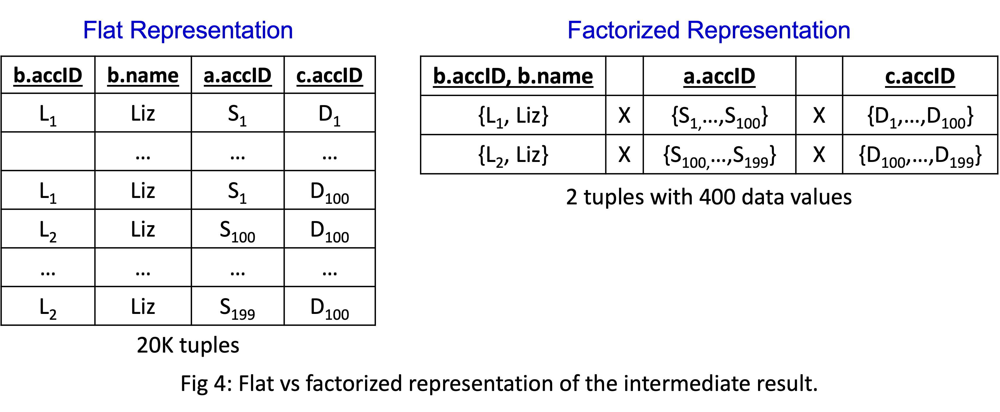
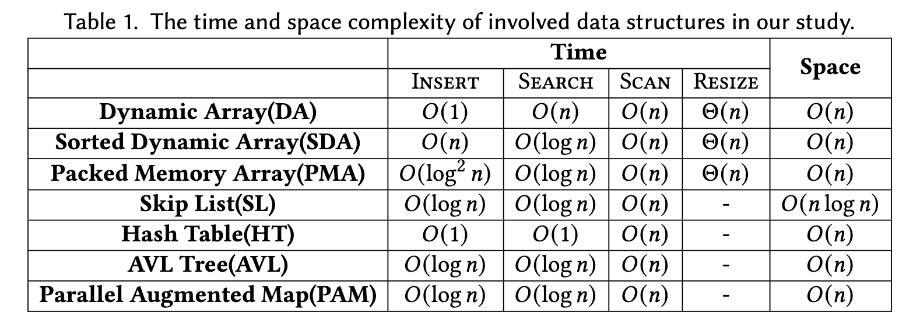
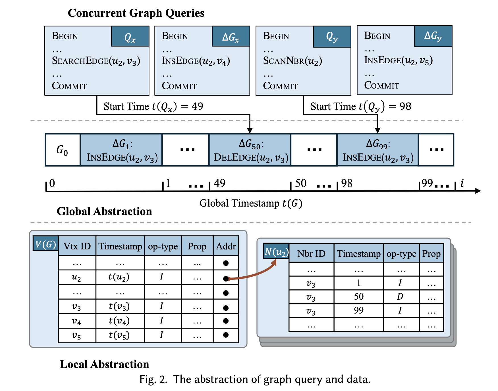
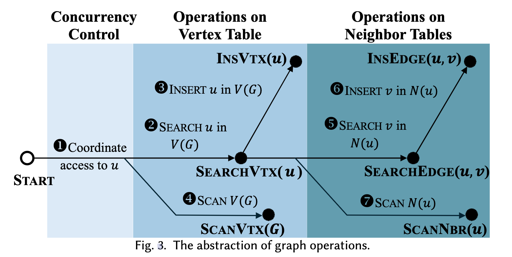
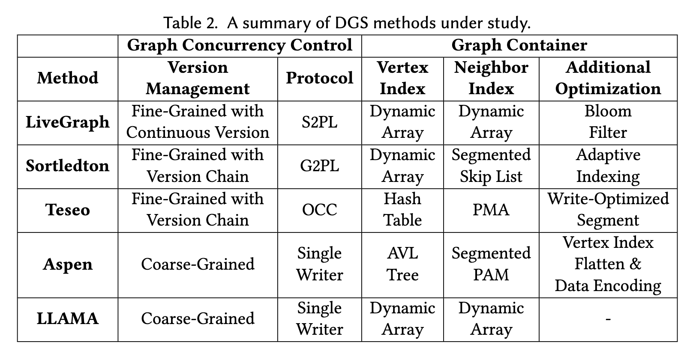
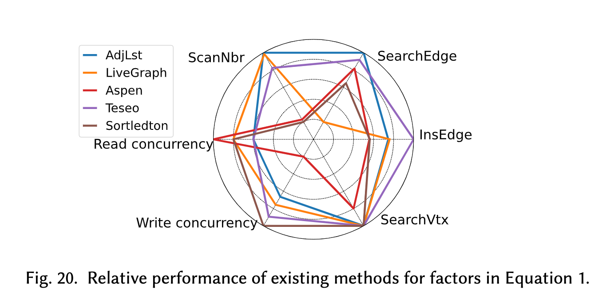
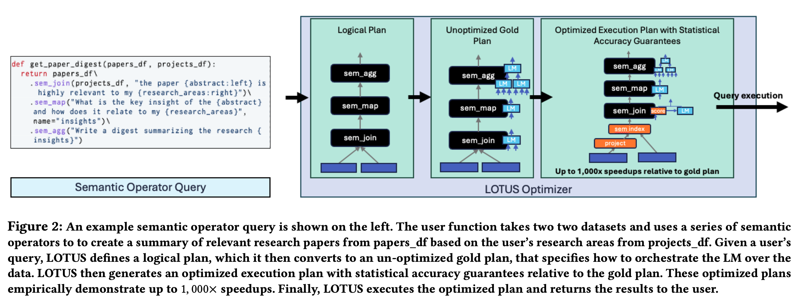
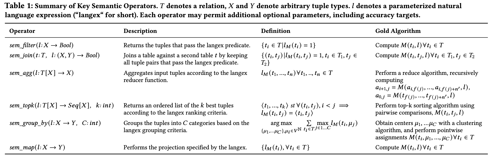

关于本博客/About this blog
在阅读学习的过程中提炼关键的信息，记录到此，期望量变带来质变。
如何读技术博客
- 辨别博客的质量
如何读论文
- 传统的读论文技巧
- 快速了解一个领域/方向：Survey
- 粗读浅读的方法：读摘要、结论
- 如果你能读懂论文中的图和公式，那基本上论文的主体内容你就清楚了
- 大模型时代的技巧
- 让大模型给你提供更多信息，但注意大模型训练数据的滞后性
- 可以发论文给大模型，让AI帮你总结
Programming
这篇文档用于记录编程语言相关的知识。
Rust
如果你有系统级编程语言的编程基础（带内存管理如C++,C）等，Rust语言的快速入门可以看这 里的第二章节，就可以快速了解Rust的语法和特性。
进一步进阶:
Benchmark
这是Benchmark的Sub-Directory
SNB Interactive
SNB BI
LinkBench
https://dl.acm.org/doi/pdf/10.1145/2463676.2465296
设计依据：Facebook的真实场景
数据: schema、属性的分布、数据分布
query & operation mix：
- query类型
- 读写比例：
- 2.19:1 read:write
- 3.19:1 association queries:association range query
- Actually 40.8 rows read per row written
Benchmark设计
- 4.1 Graph Store Implementation: Persistent storage with ACID guaranteed
- 4.2 Client design: no state tracked in the benchmark client
- 4.3&4.4 Graph Generator: a framework for probability distributions and permutation functions.
- 4.5 Workload Generator: node selection, operation mix,
- 4.6 Metrics: CPU, Read/Write IOPS, Read/Write MB/s, Memory Size
Graph
这是Graph的Sub directory
Graph Survey
https://arxiv.org/abs/2211.13170
TODO
Graph Query
DuckPGQ: Efficient Property Graph Queries in an analytical RDBMS
https://www.cidrdb.org/cidr2023/papers/p66-wolde.pdf
TODO
KUZU Graph Database Management System
https://www.cidrdb.org/cidr2023/papers/p48-jin.pdf
Factorization-based Query Processing
https://blog.kuzudb.com/post/factorization/

Benefits:
- Less copy and data movement
- Fewer Predicate and Expression Evaluations
- Ensuring sequential scans and avoiding full scans of database files
Graph Storage
TODO
- Building a High-Performance Graph Storage on Top of Tree-Structured Key-Value Stores
- Bridging the Gap between Relational OLTP and Graph-based OLAP
- Columnar Storage and List-based Processing for Graph Database Management Systems
- Sortledton: a Universal, Transactional Graph Data Structure
- LSMGraph: A High-Performance Dynamic Graph Storage System with Multi-Level CSR
- GastCoCo: Graph Storage and Coroutine-Based Prefetch Co-Design for Dynamic Graph Processing
- Teseo and the Analysis of Structural Dynamic Graphs
- Spruce: A Fast yet Space-saving Structure for Dynamic Graph Storage
Revisiting the Design of In-Memory Dynamic Graph Storage
JIXIAN SU, ..., MINYI GUO https://arxiv.org/pdf/2502.10959
评测Code: https://github.com/SJTU-Liquid/DynamicGraphStorage
摘要
The effectiveness of in-memory dynamic graph storage (DGS) for supporting concurrent graph read and write queries is crucial for real-time graph analytics and updates. Various methods have been proposed, for example, LLAMA, Aspen, LiveGraph, Teseo, and Sortledton. These approaches differ significantly in their support for read and write operations, space overhead, and concurrency control. However, there has been no systematic study to explore the trade-offs among these dimensions. In this paper, we evaluate the effectiveness of individual techniques and identify the performance factors affecting these storage methods by proposing a common abstraction for DGS design and implementing a generic test framework based on this abstraction. Our findings highlight several key insights: 1) Existing DGS methods exhibit substantial space overhead. For example, Aspen consumes 3.3-10.8x more memory than CSR, while the optimal fine-grained methods consume 4.1-8.9x more memory than CSR, indicating a significant memory overhead. 2) Existing methods often overlook memory access impact of modern architectures, leading to performance degradation compared to continuous storage methods. 3) Fine-grained concurrency control methods, in particular, suffer from severe efficiency and space issues due to maintaining versions and performing checks for each neighbor. These methods also experience significant contention on high-degree vertices. Our systematic study reveals these performance bottlenecks and outlines future directions to improve DGS for real-time graph analytics.
主要贡献
- We propose a simple yet effective abstraction for DGS, enabling a systematic study of existing methods.
- Using this abstraction, we compare key techniques in DGS, e.g., graph containers and concurrency control.
- We develop a generic testing framework based on this abstraction to systematically evaluate existing methods.
- Our findings reveal the strengths of current approaches and highlight critical performance factors, providing valuable insights to guide the design of future DGS systems.
详细内容
DGS抽象
图的数据结构表示 
graph query and data抽象 
graph operations抽象 
不同DGS设计的比较

评测框架
TODO
结论
性能对比: 
Key Technical Insights
- segmenting neighbor sets into blocks effectively balances read and write performance
- in the single update setting, fine-grained methods improve write throughput and outperform coarse-grained methods
- adaptive indexing significantly enhances performance by leveraging the sparsity of real-world graphs, reducing LLC misses
- converting tree indexes to arrays improves the performance of long-running queries in coarse-grained methods.
OLAP类论文
OLAP类技术博客
Execution Engine设计
TiDB提供了很多不错的设计介绍:
- 如何设计Plan的执行引擎: 火山模型、向量化执行 的Idea、chunk的设计
- 向量化执行: 基于apache arrow定义的chunk来实现列式内存表示，然后进行向量化计算，由于减少了内存访问和解释执行的开销，因此性能有所提 升。文中给了一个例子。
- 并行执行框架: TODO
- Pipeline执行框架: 找到pipeline breaker operator然后拆分为pipeline，然后并行执行
- TiFlash执行器线程模型:
并行化执行
- DuckDB Push-Based Execution
- Pipeline并行？
AP场景下的事务
DuckDB为何支持事务
Changing Data with Confidence and ACID
TL;DR: 尽管OLAP系统作为none system of record，但change in datasets is inevitable.
- Concurrent Ingestion and Reporting. e.g. multiple connection
- Rolling Back Incorrect Transformations, e.g. deleting wrong data
- 尽管可以re-import data，但事务的支持可以节省时间
- 事务可以支持SQL assertion
DuckDB passed all tests in TPC-H including the ACID.
DuckDB的事务设计
Analytics-Optimized Concurrent Transactions
- key design: version加在bulk version粒度上, e.g. 2048 rows
DuckDB MVCC的设计: TODO
Morsel-driven parallelism
MVCC
这是MVCC的Sub directory
Fast Serializable Multi-Version Concurrency Control for Main-Memory Database Systems
PDF: https://db.in.tum.de/~muehlbau/papers/mvcc.pdf
Abstract
Multi-Version Concurrency Control (MVCC) is a widely employed concurrency control mechanism, as it allows for execution modes where readers never block writers. However, most systems implement only snapshot isolation (SI) instead of full serializability. Adding serializability guarantees to existing SI implementations tends to be prohibitively expensive. We present a novel MVCC implementation for main-memory database systems that has very little overhead compared to serial execution with single-version concurrency control, even when maintaining serializability guarantees. Updating data in-place and storing versions as before-image deltas in undo buffers not only allows us to retain the high scan performance of single-version systems but also forms the basis of our cheap and fine-grained serializability validation mechanism. The novel idea is based on an adaptation of precision locking and verifies that the (extensional) writes of recently committed transactions do not intersect with the (intensional) read predicate space of a committing transaction. We experimentally show that our MVCC model allows very fast processing of transactions with point accesses as well as read-heavy transactions and that there is little need to prefer SI over full serializability any longer.
TODO
AI Infra
Lotus
- Paper: https://arxiv.org/abs/2407.11418
- Github Project: https://github.com/lotus-data/lotus
- Google CoLab: https://colab.research.google.com/drive/1OzoJXH13aOwNOIEemClxzNCNYnqSGxVl?usp=sharing
LOTUS makes LLM-powered data processing fast and easy.
LOTUS (LLMs Over Tables of Unstructured and Structured Data) provides a declarative programming model and an optimized query engine for serving powerful reasoning-based query pipelines over structured and unstructured data! We provide a simple and intuitive Pandas-like API, that implements semantic operators.
Example Workflow in semantic engine

Key semantic operators
